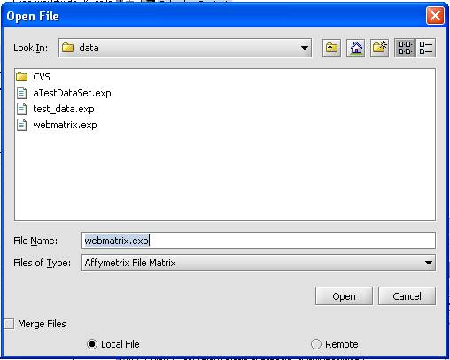
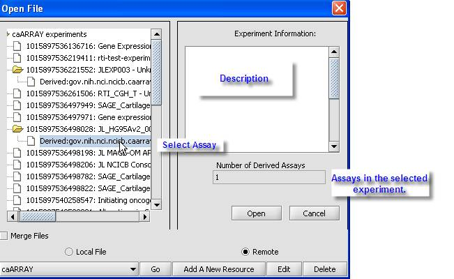

This help section describes opening local and remote files. The remote sources and file types you can access are defined in the configuration settings. Supported data formats include:
Microarray
。Affymetrix MAS5/GCOS Files (.txt) - File format produced by the Affymetrix data analysis programs.
。Affymetrix File Matrix (.exp) - This is the native file type created by geWorkbench.
。RMA Express File - File format produced by RMA Express, a sophisticated tool for combining data from multiple Affymetrix chips.
。Affy Excel or txt Data File
。Genepix Files (.gpr) - File format produced by an analysis program for two color arrays.
Other
。FASTA Files (.fa) - DNA or protein sequence files in FASTA format.
。Pattern Files - Sequence motifs produced using the Pattern Discovery component of geWorkbench.
。Genotypic Data Files - Currently not supported.
1. Right-click on the project node where the dataset is to be added.
2. Select Open File from the pop-up menu.
Note: From the main menu, you can open a dataset stored on a local or remote location, by selecting File -> Open -> File.
3. Confirm that the Local File radio button at the bottom of the window is selected.
4. Choose a file format from the "Files of Type" drop-down and then select the file to load.
Note: If an Affymetrix file is selected, an annotation file must be loaded.

1 Select from the available remote options.
2 Click Go.
。 If the remote server is online and accessible, the Open File popup window (see below) will be populated with the list of experiments available at that server.
3 Clicking on an experiment node display the associated experiment information in the corresponding display area. The number of assays included in the experiment is displayed in the Derived Assays field.
4 Right-click on the experiment node, choose Get bioassays.
。 The experiment listing is updated to reflect the number of derived assays as child nodes to the experiment selected.
5 Click on the assay of interest.
6 Click Open.

。Protein Data Bank (.pdb) - Three-dimensional structures of proteins.
。 When an Affymetrix file type is selected, the Annotation Information pop up window is displayed. To load annotation files from Affymetrix, please refer to the Annotation Information pop up window.
Once you have successfully loaded and stored the annotation files, please take the following steps:
。 In the Annotation Information pop up window, select the checkbox Don’t show the again and click Continue. The system will display the Select the Location of the Annotation File window.
。 Navigate to the location of the file and select Open.